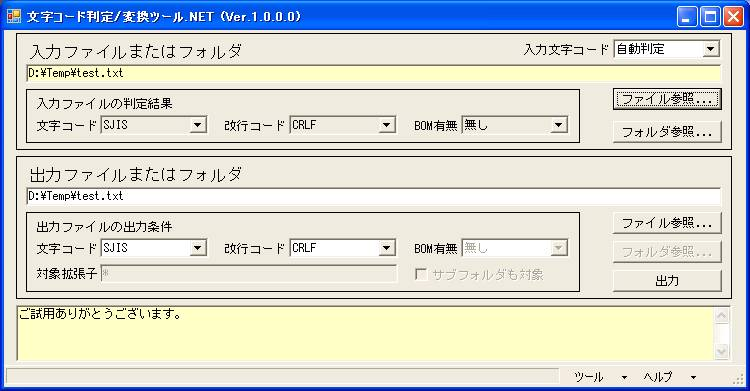

文字コード判定＆変換ツール.NETSJIS/JIS/EUC/UNICODE/UTF-7/UTF-8対応。File/Folder(SubFolder)可。コマンドライン/送るメニュー可。 |
|
１．概要 本プログラムはファイルまたはフォルダを指定して文字コードを変換するツールです。サブフォルダも変換対象にする事が可能です。 コマンドラインでの実行やファイルやフォルダをマウス右クリックして送るメニュー(SendTo)から実行する事が可能です。 対応文字コードは、ＳＪＩＳ、ＪＩＳ、ＥＵＣ、ＵＮＩＣＯＤＥ(ＵＴＦ−１６)、ＵＴＦ−７、ＵＴＦ−８です。 ２．操作方法  （０）ご使用前に変換前のファイルまたはフォルダをバックアップをしてください。 （１）入力文字コード 入力ファイルの文字コードを指定します。自動判定する事が出来ます。 （２）入力ファイル参照 入力ファイルをファイルダイアログから選択します。エクスプローラからドラック＆ドロップする事も出来ます。 入力文字コードが自動判定の場合は入力ファイルの文字コードをこの時点で判定します。 また、入力ファイルの改行コードやＢＯＭ有無をこの時点で判定します。 デフォルトの出力ファイルを入力ファイルと同じに自動設定します。 （３）入力フォルダ参照 入力フォルダをフォルダダイアログから選択します。エクスプローラからドラック＆ドロップする事も出来ます。 デフォルトの出力フォルダを入力フォルダと同じに自動設定します。 （４）出力ファイル参照 デフォルトの出力ファイルを変更する場合はファイルダイアログから選択します。直接キーボードから入力する事も出来ます。 （５）出力フォルダ参照 デフォルトの出力フォルダを変更する場合はフォルダダイアログから選択します。直接キーボードから入力する事も出来ます。 （６）出力文字コード 出力するファイルの文字コードを指定します。 （７）出力改行コード 出力するファイルの改行コードを指定します。 （８）出力ＢＯＭ有無 出力するファイルにＢＯＭを付加するかどうかを指定します。 （９）対象拡張子 フォルダ単位で文字コード変換する場合に、変換対象となる拡張子を指定します。 （10）サブフォルダを対象とするかどうか フォルダ単位で文字コード変換する場合に、サブフォルダを変換対象とするかどうかを指定します。 サブフォルダを変換対象とすると、指定フォルダ以下の全てのファイル(対象拡張子のファイル)が変換対象になります。 （11）「ツール」メニューの「現在の設定でコマンドライン作成．．．」 指定内容でバッチファイルに記述するコマンドライン文字列を作成し表示します。 ＜コマンドラインの指定方法＞ NonCodeNet.exe [入力ファイルまたはフォルダPATH] [変換条件] [変換条件]は省略可能です。 [-BAT] ：画面を表示しないで実行 (省略時：画面表示) [-OFL出力PATH] ：出力ファイル／フォルダPATH (省略時：入力と同じ) [-ICD入力文字コード]：SJIS,JIS,EUC,UNICODE,UTF7,UTF8 (省略時：自動判定) [-OCD出力文字コード]：SJIS,JIS,EUC,UNICODE,UTF7,UTF8 (省略時：SJIS) [-CRLF] ：出力ファイルの改行コード(CRLF) (省略時：CRLF) [-CR] ：出力ファイルの改行コード(CR) (省略時：CRLF) [-LF] ：出力ファイルの改行コード(LF) (省略時：CRLF) [-BOM] ：出力ファイルにBOMを付加する (省略時：BOM無) [-EXT拡張子] ：変換対象の拡張子をカンマ区切りで指定 (省略時：*) [-SUB] ：サブフォルダを変換対象にする (省略時：対象外) (例)フォルダ指定(UTF7→UNICODE変換、改行=CRLF、BOM有、拡張子=a,b,c、サブフォルダ対象) NonCodeNet.exe D:\Temp -BAT -OFLD:\Temp -ICDUTF7 -OCDUNICODE -CRLF -BOM -EXTa,b,c -SUB（12）「ツール」メニューの「ショートカットを「送る」メニューに作成」 「送る」メニューに画面表示モードのショートカットを作成します。 ファイルやフォルダをマウス右クリックして送るメニューから実行する事が可能になります。 ショートカットの引数を「コマンドラインの指定方法」に従って[変換条件]を追加する事が出来ます。 この機能でショートカットの作成が出来ない場合は、手動でSendToにショートカットを作成する事が出来ます。 SendToの絶対PATHは、XPの場合は「C:\Documents and Settings\[ユーザ名]\SendTo」です。 ３．インストール／アンインストール方法 本プログラムはインストール操作が必要ありません。 本プログラム一式（ＺＩＰファイル）を解凍後、NonCodeNet.exe を実行するだけでするだけでご使用頂けます。 アンインストール操作も必要ありませんので、本プログラム一式を削除して頂くだけで完了です。 (注意) Microsoft .NET Framework Version 2.0以上がインストールされている必要があります。（既にインストール済の可能性大） インストールされていない場合は「Microsoft .NET Framework Version 2.0 ダウンロード」でネット検索してインストールしてください。 ４．著作権 本プログラムの全ての著作権は「のん」が所有しています。 本プログラム一式を転載する場合は著作権所有者の許可が必要となります。 (NonSoftの紹介リンクは問題ありませんので宜しくお願いします) また、著作権所有者が許可したサイトでのみダウンロードが可能となります。 商用利用についての制限はありません。 ５．ライセンス 本プログラムはフリーライセンス(寄付歓迎)です。 本プログラムに良い評価を頂ける場合は、寄付やホームページで紹介等して頂けると嬉しいです。 寄付はこちらでお願いします。http://homepage2.nifty.com/nonnon/kifu.html ６．免責事項 本プログラムが原因による損害・問題に対し一切の責任を負えません。ご利用者の責任の範囲内でお使いください。 ７．最新版の確認先 文字コード判定＆変換ツール.NET の最新版を検索(Google) 文字コード判定＆変換ツール.NET の最新版を検索(Yahoo) 文字コード判定＆変換ツール.NET の最新版を検索(MSN) 文字コード判定＆変換ツール.NET の最新版を検索(NonSoft) |